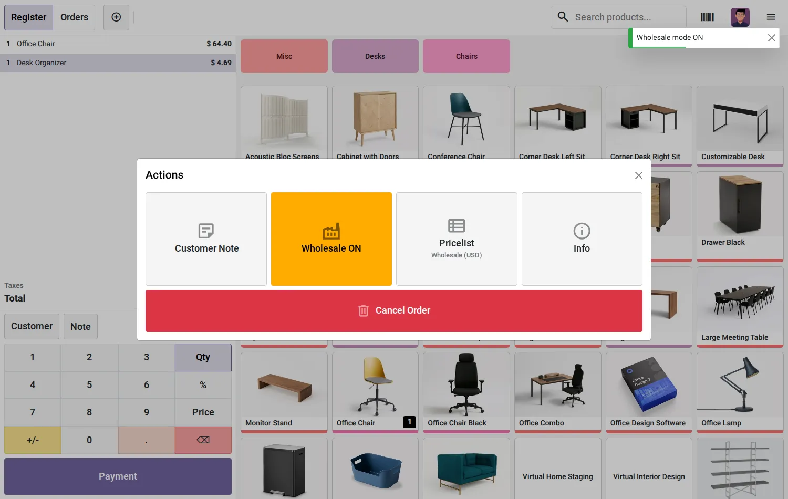
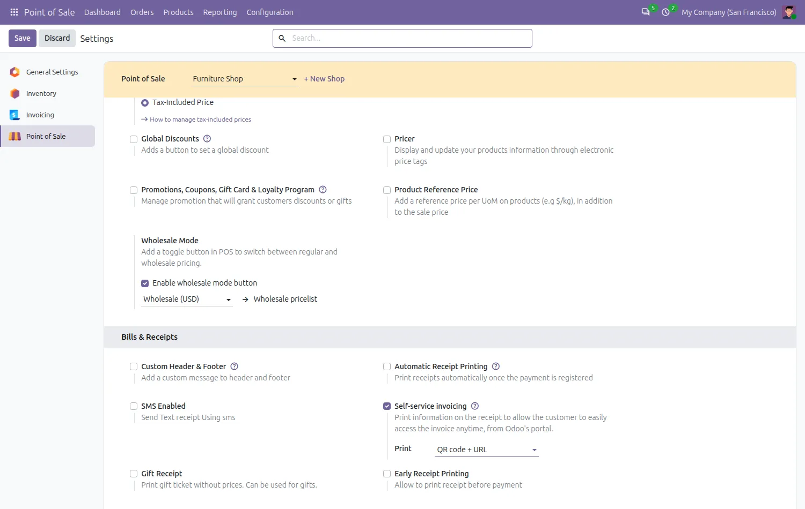

POS Wholesale Price - Switch to Wholesale Pricelist
POS wholesale mode: one button switches the whole order to your wholesale POS pricelist and back. Serve retail and wholesale customers from one POS.
- Price
- $19
- Odoo versions
- 16.0
- 17.0
- 18.0
- 19.0
- 20.0
- Technical name
tamadoo_pos_wholesale_mode- License
- OPL-1

Text and screenshots below are from the Odoo 20.0 version of this module.
POS Wholesale Price - Switch to Wholesale Pricelist
Serve retail and wholesale customers from the same POS. One button toggles the entire order to your configured wholesale pricelist — all current and future lines update instantly.
- 🏭 Wholesale toggle button in the POS Actions menu
- Switches active pricelist for the entire order
- Button turns yellow when wholesale mode is active
- Toggling off returns to the customer's own pricelist, or to the POS default pricelist
- Configure the wholesale pricelist in POS Settings
Screenshots
Wholesale mode active — button turns yellow and the order switches to wholesale pricing

Pricelist setting in POS Configuration

Step by step
1. Create the wholesale pricelist
Create a pricelist with your wholesale prices in Sales → Configuration → Pricelists.
2. Link it to the point of sale
Open Point of Sale → Configuration → Settings and choose the point of sale at the top. In the Pricing section, tick Enable wholesale mode button under Wholesale Mode and select the Wholesale pricelist. Save.
3. Find the button in the POS
Tap the ⋮ button next to the control buttons to open Actions; the Wholesale button is there.
4. Switch the order to wholesale
Tap it for a wholesale customer: the order moves to the wholesale pricelist and the button reads Wholesale ON.
5. Switch back
Tap the button again to return the order to its regular pricelist: the pricelist of the selected customer when the point of sale has it, otherwise the default pricelist of the point of sale.
Get POS Wholesale Price
Questions before buying? Write to tama.odoo@gmail.com.